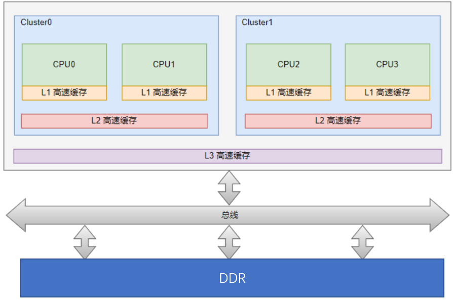
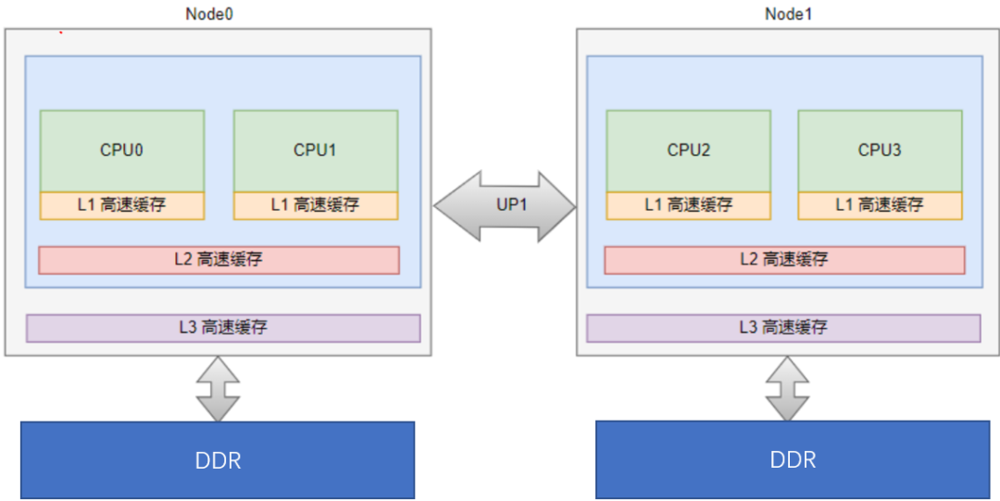
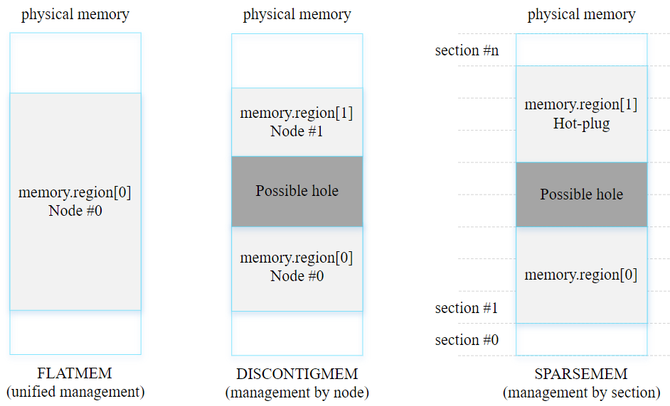
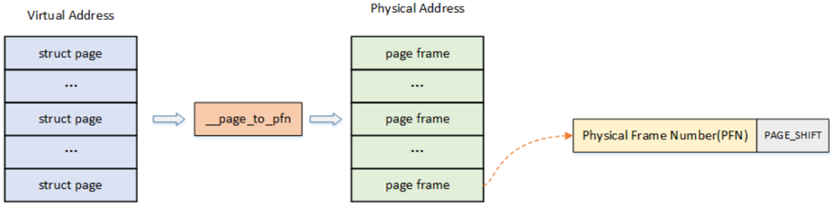
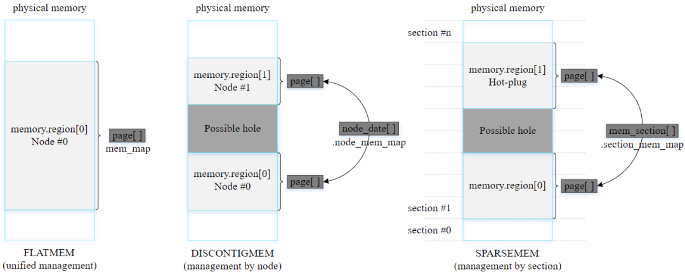
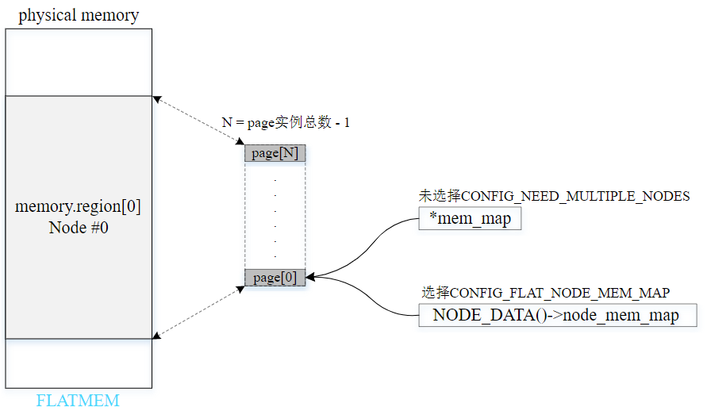
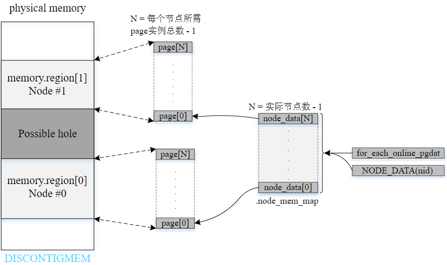
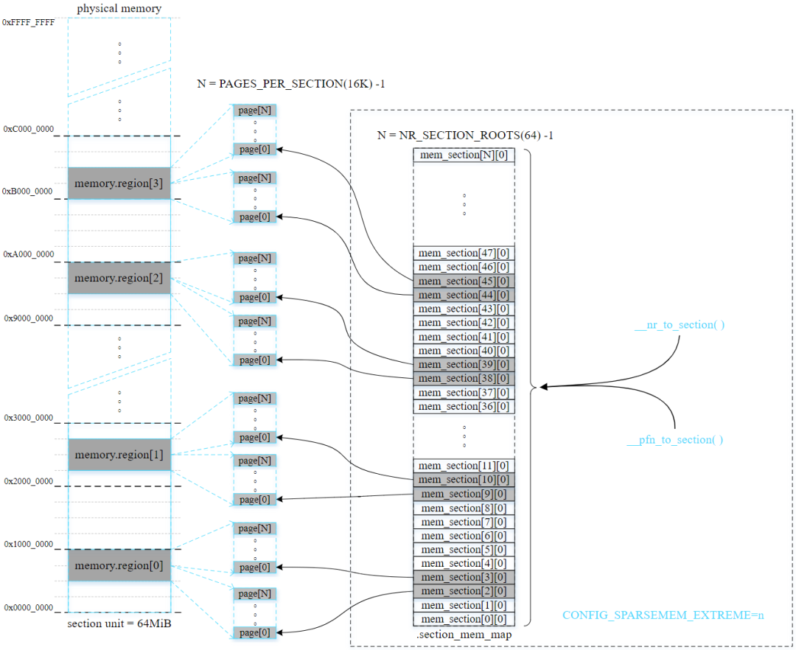
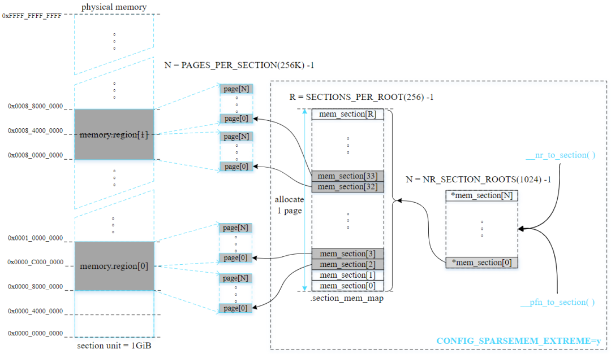

3.2.3.1. 内存架构和linux物理内存模型
3.2.3.1.1. 内存架构
现行的内存架构主要是以下两种:
UMA: Uniform Memory Access,所有处理器对内存的访问都是一致的

NUMA: Non Uniform Memory Access,非一致性内存访问

3.2.3.1.2. linux内存模型
内核是以页为单位进行内存管理的，使用struct page结构体来进行管理，其封装了每页内存块的状态信息，比如使用信息、统计信息以及与其他 结构的关联映射信息等。
为了快速索引到具体的物理页，内核为每个物理页定义了一个索引编号(PFN)， PFN与struct page是一一对应关系。内核提供了两个宏来完成这两者的互相转换，
page_to_pfn 和 pfn_to_page .
内核中如何组织管理这些物理内存页struct page的方式，我们称之为 物理内存模型 ,不同的物理内存模型，应对的场景以及page_to_pfn与pfn_to_page的计算逻辑是不一样的
/*
* supports 3 memory models.
*/
#if defined(CONFIG_FLATMEM)
#define __pfn_to_page(pfn) (mem_map + ((pfn) - ARCH_PFN_OFFSET))
#define __page_to_pfn(page) ((unsigned long)((page) - mem_map) + \
ARCH_PFN_OFFSET)
#elif defined(CONFIG_DISCONTIGMEM)
#define __pfn_to_page(pfn) \
({ unsigned long __pfn = (pfn); \
unsigned long __nid = arch_pfn_to_nid(__pfn); \
NODE_DATA(__nid)->node_mem_map + arch_local_page_offset(__pfn, __nid);\
})
#define __page_to_pfn(pg) \
({ const struct page *__pg = (pg); \
struct pglist_data *__pgdat = NODE_DATA(page_to_nid(__pg)); \
(unsigned long)(__pg - __pgdat->node_mem_map) + \
__pgdat->node_start_pfn; \
})
#elif defined(CONFIG_SPARSEMEM_VMEMMAP)
/* memmap is virtually contiguous. */
#define __pfn_to_page(pfn) (vmemmap + (pfn))
#define __page_to_pfn(page) (unsigned long)((page) - vmemmap)
#elif defined(CONFIG_SPARSEMEM)
/*
* Note: section's mem_map is encoded to reflect its start_pfn.
* section[i].section_mem_map == mem_map's address - start_pfn;
*/
#define __page_to_pfn(pg) \
({ const struct page *__pg = (pg); \
int __sec = page_to_section(__pg); \
(unsigned long)(__pg - __section_mem_map_addr(__nr_to_section(__sec))); \
})
#define __pfn_to_page(pfn) \
({ unsigned long __pfn = (pfn); \
struct mem_section *__sec = __pfn_to_section(__pfn); \
__section_mem_map_addr(__sec) + __pfn; \
})
#endif /* CONFIG_FLATMEM/DISCONTIGMEM/SPARSEMEM */
linux目前支持三种内存模型(include/asm-generic/memory_model.h): PLATMEM , DISCONTIGMEM , SPARSEMEM .某些体系架构支持
多种内存模型，但在内核编译构建时只能选择使用一种内存模型

下面分别讨论每种内存模型的特点：
PLATMEM(平坦内存模型)
内存连续且不存在空隙
在大多数情况下，应用于UMA系统
DISCONTIGMEM(不连续内存模型)
多个内存节点不连续且存在空隙(hole)
适用于UMA系统和NUMA系统
ARM在2010年已移除对DISCONTIGMEM内存模型的支持
SPARSEMEM(稀疏内存模型)
多个内存区域不连续且存在空隙
支持内存热插拔[hot-plug memory]，但性能略逊于DISCONTIGMEM
在x86或ARM64内核采用了最近实现的SPARSEMEM_VMEMMAP变种，其性能比DISCONTIGMEM更优并且与PLATMEM相当
对于ARM64内核，默认选择SPARSEMEM内存模型
以section为单位管理online和hot-plug内存
3.2.3.1.3. linux内存映射
系统中对内存的管理是以页为单位的:
page: 线性地址被分成以固定长度为单位的组，称为页，页内部连续的线性地址被映射到连续的物理地址中
page frame: 内存被分成固定长度的存储区域，称为页框，也叫物理页．每一个页框会包含一个页，页框的长度和一个页的长度是一致的，在内核中使用struct page来关联物理页

管理内存映射的方式取决于选用的内存模型

3.2.3.1.3.1. 平坦内存模型(flat memory model)的内存映射管理
在平坦内存模型中，毗邻连续的排列所有页帧描述符，全局指针变量mem_map指向首个页帧描述符．同时结构体变量config_page_data的node_mem_map成员 也指向第一个页帧描述符

3.2.3.1.3.2. 不连续内存模型(discontiguous memory model)的内存映射管理
非连续内存模型由多个内存节点组成，每个节点的页帧数决定了页帧描述符的数量．通过node_data数据获取指定节点的实例，然后使用节点实例 的node_mem_map成员来管理每个节点的页帧描述符

3.2.3.1.3.3. 稀疏内存模型(sparse memory model)的内存映射管理
稀疏内存模型以固定大小的单元统一管理分散的内存，易于内存管理．这个固定大小的单元被称为内存段(select). 通过这种方式划分整个物理地址空间 以及当前存在的内存．结构体struct mem_section管理一个section，并通过section_mem_map成员指向一个页帧描述符数组(page 数组)，数组元素数量 为PAGES_PER_SECTION．在稀疏内存模型中，section是最小的单元，其大小从几十MB到几GB不等，用于管理online/offline(热插拔)内存. 目前存在两种方法 用于管理不同数量的section
CONFIG_SPARSEMEM_STATIC: 大多数32位系统和section数量不多的情况会利用这种方法管理内存．在编译时就能确定section数量
CONFIG_SPARSEMEM_EXTREME(ARM64默认启用): 大多数64位系统和section数量较多的情况下会利用这种方法管理内存．如果内存中存在较大的空隙，使用两级 section管理数组能减少内存的浪费．在初始化时创建第一级管理数组
CONFIG_SPARSEMEM_STATIC配置选项例子

CONFIG_SPARSEMEM_EXTREME配置选项例子
